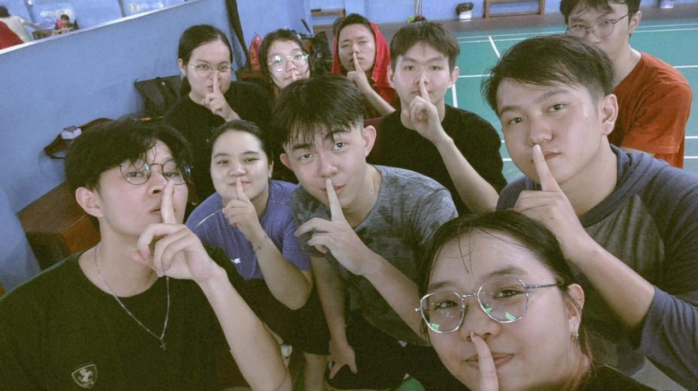
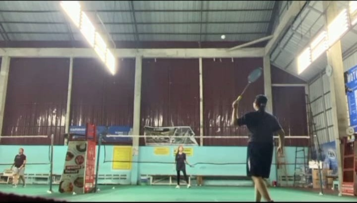
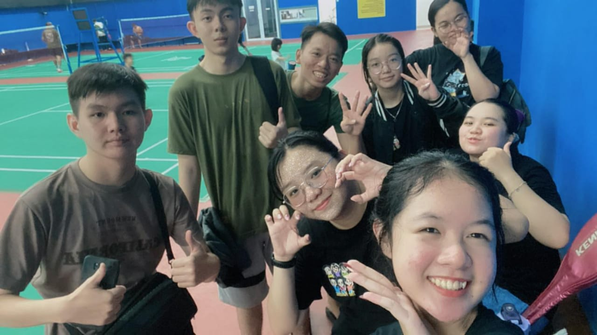
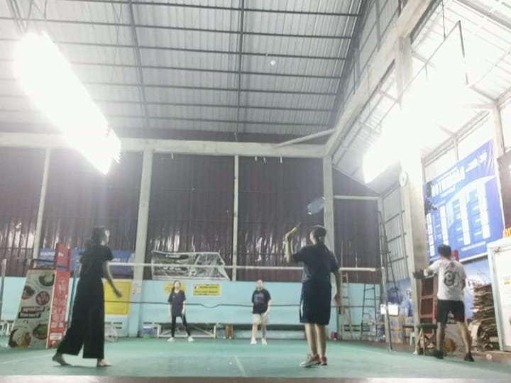
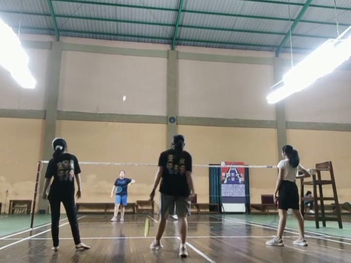
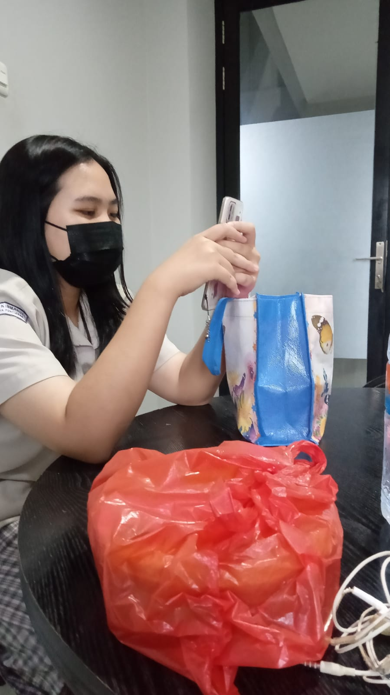

About Me
| Nama | : | Agnes Aileen |
|---|---|---|
| Domisili | : | Pontianak |
| Tempat, Tanggal Lahir | : | Pontianak, 31 Agustus 2005 |
| Agama | : | Kristen |
| Alamat | : | Jl. Purnama gang Purnama Agung 7 blok K no.K6 |
| Makanan Favorit | : | Seafood |
| Warna Favorit | : | Hitam, Kuning, Pastel |
| Hobi | : | Badminton |
Motto
"HIDUP CUMAN SEKALI, DIBAWA SANTAI AJA DAN JADI BERKAT UNTUK SESAMA"
My Country

Bambu Runcing

Bandara Supadio

Jembatan Tol

Taman Digulis
Taman Catur

Tugu Khatulistiwa

Waterfront
Hobby

Lapangan Kurnia

Lapangan Cakra

Lapangan Sano

Lapangan Cakra

Lapangan CK
Education


Institute
Visi
Lembaga Pendidikan Tinggi yang berlandaskan nilai-nilai Kristiani dalam mempersiapkan sumber daya manusia yang unggul.
Misi
Mendidik dan melatih sumber daya manusia berkarakter, terampil, siap berkompetisi secara global dan membawa dampak positif bagi lingkungan sekitarnya.
My Major
Visi
Menjadi Program Studi yang Menghasilkan Digipreneur Kompeten, Terampil dan Unggul Secara Nasional maupun Global Sesuai Dengan Nilai-Nilai Kristiani
Misi
- Menyelenggarakan Pendidikan Tinggi berbasis Ilmu Pengetahuan dan Teknologi Bisnis Digital untuk Menghasilkan Lulusan yang Kompeten, Terampil dan Unggul Secara Global Sesuai Dengan Nilai-Nilai Kristiani.
- Menyelenggarakan Penelitian untuk berkontribusi kepada seluruh pemangku kepentingan (stakeholders) eksternal dan internal program studi Bisnis Digital
- Melaksanakan Pengabdian Masyarakat yang Memberikan Nilai dan Dampak yang Signifikan sesuai dengan keilmuan Bisnis Digital.
- Menjalin Kerjasama dengan Lembaga Pemerintahan dan Dunia Usaha/Dunia Industri (DU/DI) di bidang Bisnis Digital.
Work Experience

Magang di bagian admin
November 2022 - Desember 2022